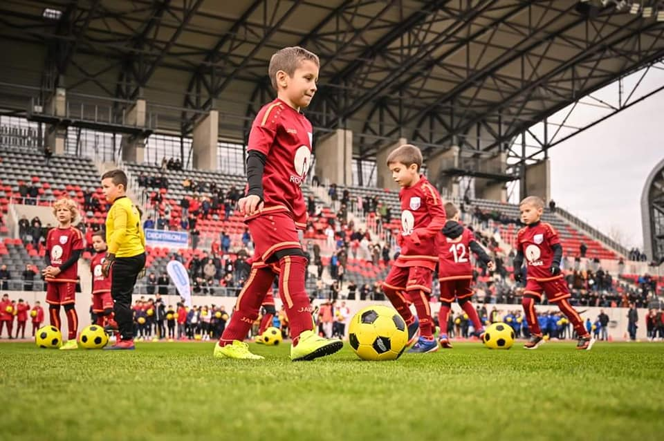
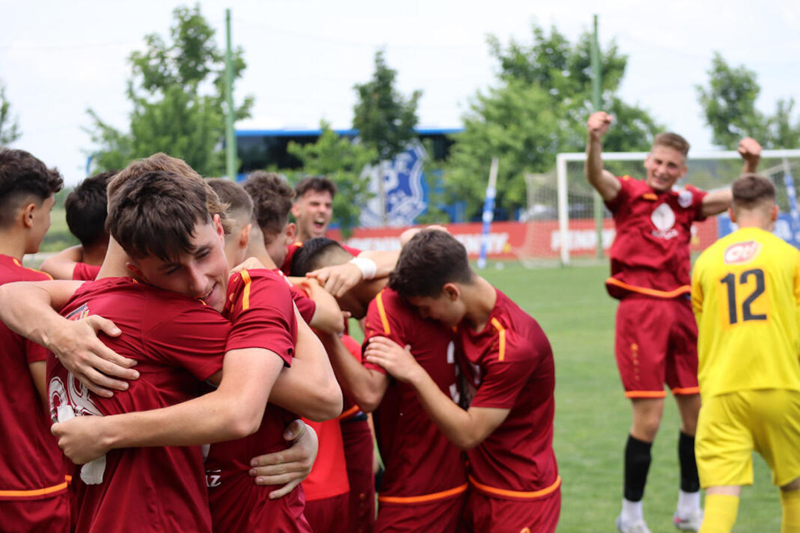

- 
- 
Interstar duce performanta la alt nivel in Sibiu de 20 ani
Suntem un club de fotbal sibian care ne dorim a aduce Sibiului o performanta cat mai inalta in zona fotbalului. Copiii sunt asteptati de la varsta de 4 ani.
Suntem un club de fotbal sibian care ne dorim a aduce Sibiului o performanta cat mai inalta in zona fotbalului. Copiii sunt asteptati de la varsta de 4 ani.
Interstar ofera copiilor inca de la o varsta frageda posibilitatea de a se dezvolta pe latura sportiva si pentru a isi ocupa timpul cu o activitate sanatoasa.
Prin prisma sportului copilasii se disciplineaza cu ajutorul unui program fix si ajutor din partea staff-ului.
Impreuna cu alti copilasi se va construi o comunitate si o prietenie in jurul aceluiasi scop, fotbalul. Copiii v-or creea o gramada de aminitiri impreuna.
Copilasii au ocazia sa invete sa imparta, sa convietuiasca si cu alti copilasi. O trasatura foarte importanta in ziua de astazi si mai rar intalnita.
Antrenor U16
Antrenor copiii varste 4-14 ani
Antrenor copiii varste 4-14 ani
Antrenor copiii varste 4-14 ani
Antrenor copiii varste 4-14 ani
Antrenor copiii varste 4-14 ani